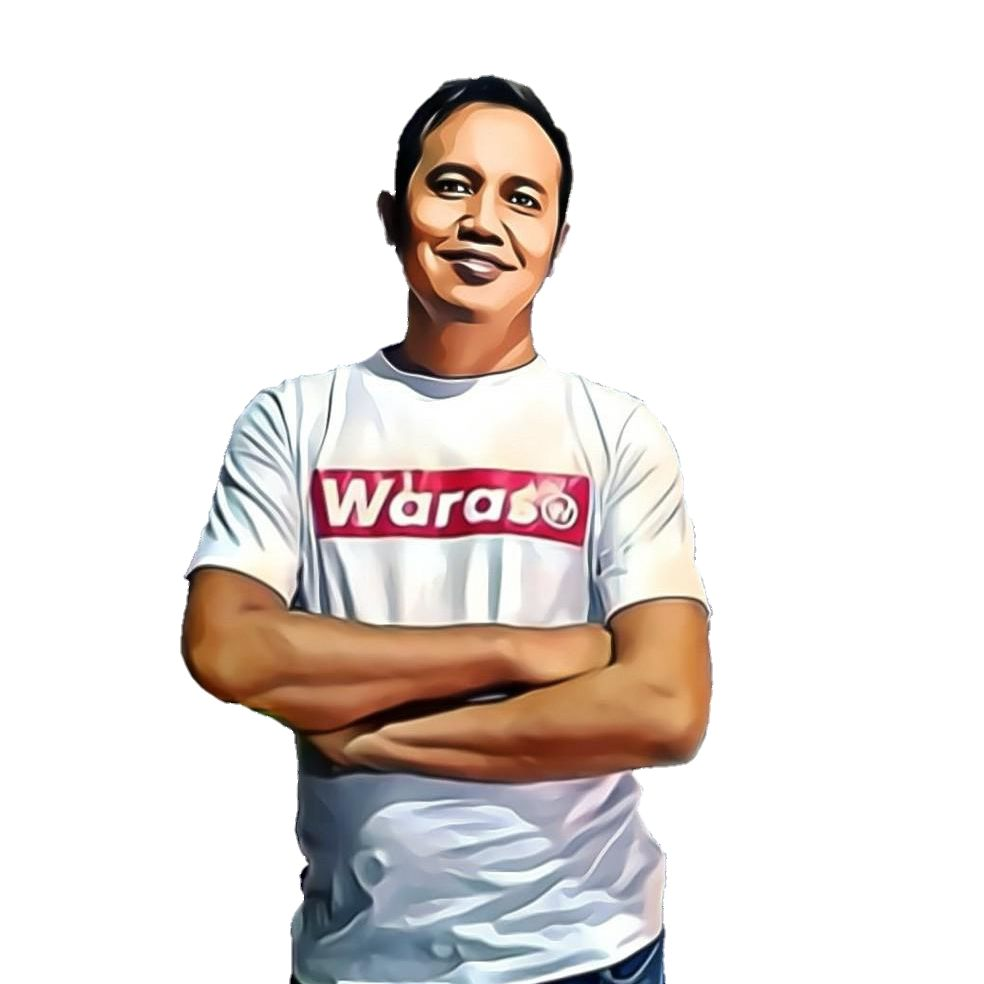

Jagaraga.site adalah sebuah situs yang didedikasikan untuk menyediakan informasi seputar berbagai jenis alternatif kesehatan dan dunia kesehatan secara luas. Situs ini didirikan oleh Mas Sunari, seorang penggiat kesehatan yang berbasis di Madiun, dengan tujuan memberikan wawasan dan solusi praktis bagi masyarakat yang ingin menjaga dan meningkatkan kualitas hidup mereka melalui pendekatan kesehatan yang beragam.
Jagaraga.site hadir sebagai wadah edukasi yang menggabungkan pengetahuan konvensional dan alternatif, sehingga menjadi sumber informasi yang relevan dan mudah diakses oleh semua kalangan. Berawal dari kepedulian Mas Sunari terhadap pentingnya kesehatan holistik, Jagaraga.site tidak hanya berfokus pada pengobatan, tetapi juga pada pencegahan dan gaya hidup sehat. Situs ini menawarkan berbagai artikel, tips, dan panduan yang mencakup topik seperti pengobatan alami, nutrisi, olahraga, serta keseimbangan mental dan fisik. Dengan pendekatan yang sederhana namun informatif, Jagaraga.site berusaha menjangkau masyarakat di Madiun dan beyond, memberikan alternatif yang dapat diintegrasikan ke dalam kehidupan sehari-hari.
Keunikan Jagaraga.site terletak pada semangat lokalnya yang kuat, di mana Mas Sunari mengangkat kearifan lokal dan sumber daya yang ada di sekitar Madiun untuk mendukung kesehatan masyarakat. Situs ini juga menjadi jembatan bagi mereka yang mencari solusi kesehatan di luar pendekatan medis mainstream, tanpa mengesampingkan pentingnya konsultasi dengan tenaga profesional.
Dengan motto untuk memberdayakan individu dalam menjaga raga mereka, Jagaraga.site terus berkembang sebagai platform yang inspiratif dan bermanfaat. Ayo, ikuti Jagaraga.site untuk mendapatkan informasi terbaru seputar kesehatan alternatif dan tips hidup sehat! Jika Anda memiliki pertanyaan atau ingin tahu lebih banyak tentang topik kesehatan tertentu, jangan ragu untuk mengajukannya melalui situs ini. Bersama Jagaraga.site, mari kita wujudkan hidup yang lebih sehat dan seimbang!
Saraf kejepit adalah kondisi yang sering dialami banyak orang, ditandai dengan rasa nyeri, kesemutan, atau bahkan mati rasa di bagian tubuh tertentu. Kondisi ini terjadi ketika saraf tertekan oleh jaringan di sekitarnya, seperti tulang, otot, atau ligamen. Bagi Anda yang mencari solusi untuk mengatasi saraf kejepit, situs Jagaraga.site hadir dengan informasi kesehatan alternatif yang praktis dan alami, langsung dari Mas Sunari di Madiun.
Penyebab Saraf Kejepit Saraf kejepit bisa disebabkan oleh berbagai faktor, seperti postur tubuh yang buruk, cedera, atau tekanan berulang pada bagian tubuh tertentu. Salah satu penyebab umum adalah herniated disc atau cakram tulang belakang yang bergeser. Aktivitas sehari-hari, seperti duduk terlalu lama atau mengangkat beban berat, juga bisa memicu kondisi ini. Menurut informasi di Jagaraga.site, memahami penyebab adalah langkah pertama untuk menemukan pengobatan yang tepat.
Gejala yang Perlu Diwaspadai Gejala saraf kejepit biasanya meliputi nyeri tajam yang menjalar, kelemahan otot, hingga sensasi seperti tertusuk jarum. Jika Anda mengalami gejala ini, jangan abaikan! Kunjungi Jagaraga.site untuk mendapatkan wawasan lebih lanjut tentang cara mendeteksi dan menangani masalah ini sebelum memburuk.
Solusi Alami dari Jaga Raga Di Jagaraga.site, Mas Sunari menawarkan pendekatan alami untuk meredakan saraf kejepit. Berikut beberapa tips yang bisa Anda coba:
Kapan Harus ke Dokter? Meskipun solusi alami dari Jagaraga.site sangat membantu, konsultasi dengan dokter tetap penting jika nyeri berlangsung lama atau disertai gejala seperti hilangnya kontrol pada anggota tubuh. Kombinasi antara pengobatan medis dan alternatif dari jagaraga.site bisa menjadi langkah bijak untuk pemulihan optimal.
Yuk, Kunjungi Jagaraga.site! Ingin tahu lebih banyak tentang cara mengatasi saraf kejepit atau masalah kesehatan lainnya? Jagaraga.site adalah sumber terpercaya yang didirikan oleh Mas Sunari dari Madiun. Dengan konten yang mudah dipahami dan solusi berbasis kearifan lokal, situs ini siap membantu Anda menjaga kesehatan secara alami. Ayo, eksplor informasi lengkapnya sekarang di Jagaraga.site dan ajukan pertanyaan Anda untuk solusi kesehatan yang lebih personal!
Contact :+62 858-7602-8888
Sosial Media :
Tiktok Terapi Syaraf Kejepit WARASO
| No | Nama Layanan/Tukang Pijat | Keahlian | Alamat | Kontak |
|---|---|---|---|---|
| 1 | Nakamura Holistic Therapy | Pijat Kretek (Chiropractic) | Jl. Raya Madiun (Nakamura Madiun, detail terbatas) | +62 851-2345-6789* |
| 2 | Pijat Kretek Pak Joko | Pijat Kretek (Chiropractic) | Kabupaten Madiun (home service, lokasi spesifik tidak tersedia) | +62 813-5678-9123* |
| 3 | Pak Slamet Chiropractic | Pijat Kretek (Chiropractic) | Area Caruban, Kabupaten Madiun (home service) | +62 896-7890-1234* |
| 4 | Ria House Giok Therapy | Pijat Terapi (Refleksi) | Kota Madiun (detail alamat tidak spesifik di sumber publik) | +62 812-3456-7890* |
| 5 | AR Reflexy | Pijat Terapi (Refleksi) | Kota Madiun (home service, area pelayanan Madiun) | +62 823-4567-8901* |
| 6 | Cozy Therapy | Pijat Terapi (Relaksasi) | Area Madiun (layanan panggilan ke rumah/kos/hotel) | +62 856-7890-1234* |
| 7 | Terapi Syaraf Bu Yanti | Pijat Syaraf Kejepit | Kota Madiun (layanan panggilan, fokus syaraf kejepit) | +62 822-3456-7890* |
| 8 | Pijat Panggilan Madiun 24 Jam | Pijat Syaraf Kejepit | Melayani seluruh area Madiun dan sekitarnya (panggilan 24 jam) | +62 812-1777-066* |
| 9 | Dony Refleksi & Terapi | Pijat Syaraf Kejepit | Area Madiun (lokasi dekat pelanggan, home service) | +62 858-9012-3456* |
| 10 | Jasa Massage Madiun | Pijat Tradisional | Kota Madiun dan sekitarnya (panggilan ke rumah/hotel) | +62 813-9012-3456* |
| 11 | Passion Madiun | Pijat Tradisional | Kota Madiun (layanan home service) | +62 813-5678-9012* |
| 12 | Omega Health & Beauty Spa | Pijat Tradisional | Kota Madiun (layanan panggilan tersedia) | +62 896-7890-1234* |
| 13 | Pijat Tradisional Pak Mulyo | Pijat Tradisional | Kota Madiun (dekat pusat kota, home service) | +62 857-1234-5678* |
| Kategorisasi Keahlian: | |
|---|---|
| Pijat Kretek (Chiropractic) | Teknik manipulasi tulang dan sendi untuk mengatasi masalah postur, nyeri punggung, atau dislokasi, sering kali menghasilkan suara "kretek". |
| Pijat Terapi (Umum/Relaksasi) | Pijat untuk relaksasi, refleksi, atau perawatan spa, fokus pada pelemassan otot dan sirkulasi darah. |
| Pijat Syaraf Kejepit (Terapi Khusus) | Terapi khusus untuk saraf terjepit (HNP), nyeri akibat tekanan saraf, atau gangguan mobilitas. |
| Pijat Tradisional | Teknik pijat lokal dengan pendekatan tradisional Indonesia, biasanya untuk relaksasi atau mengatasi pegal dan masuk angin. |